AI 영상 제작자에게
꼭 필요한 조명 용어 20가지
AI 그림과 AI 영상에 쓰는 조명 용어 50개를 정리했어요. 영화·사진 촬영 현장에서 쓰는 이름이라 AI도 그대로 알아들어요. 용어마다 뜻과 분위기를 함께 담았어요.
쓰는 법
- 요청 문장에는 장면(누가, 어디서, 무엇을 하는지)을 먼저 쓰고, 끝에 조명 용어를 영어로 붙여 보세요.
- 조명 용어는 한두 개면 충분해요. 하나씩 바꿔 넣으면 같은 장면에서 분위기만 달라져요.
- 이미 만든 그림의 조명만 바꾸고 싶다면 그 그림을 함께 올리고, 조명만 바꿔 달라는 말 뒤에 용어를 붙여 보세요.
- AI 영상 도구에서도 똑같아요. 장면 설명 끝에 조명 용어를 붙이면 돼요.
영상에 나온 조명 용어 20개
번호는 영상에 나온 순서와 같아요. 그림은 토큰전쟁 마스코트 슬라임으로 만든 예시예요.
밝고 그림자가 적은 조명입니다.
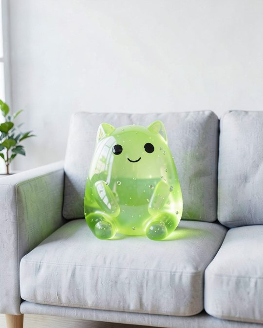
어둡고 명암 대비가 큰 조명입니다.
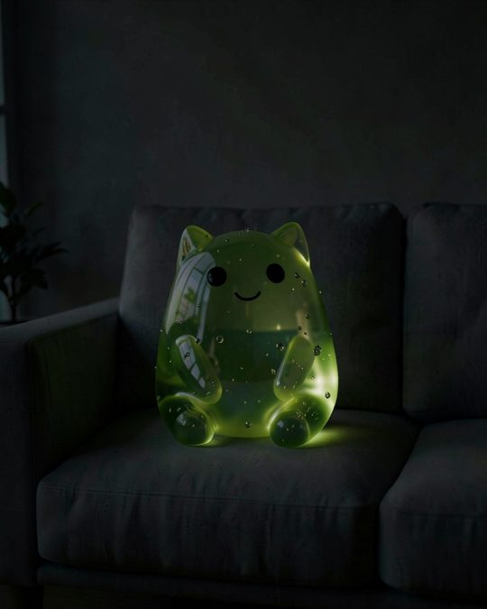
해 뜬 직후나 해 지기 전의 낮고 따뜻한 햇빛입니다.
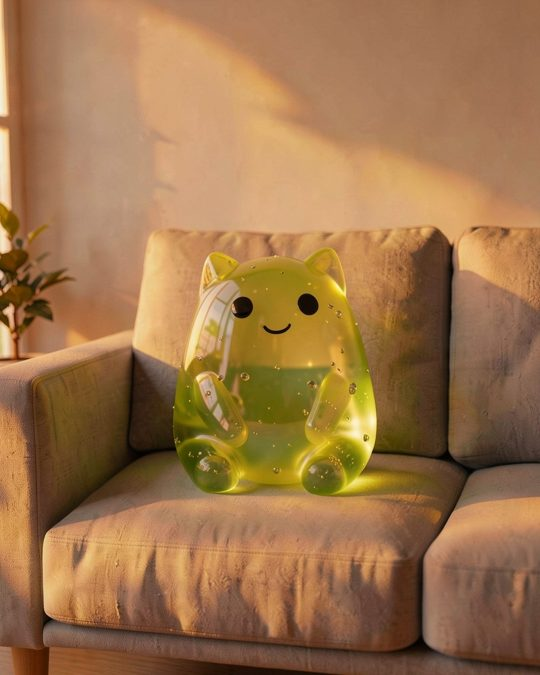
해가 진 직후나 뜨기 전의 푸른 하늘빛입니다.
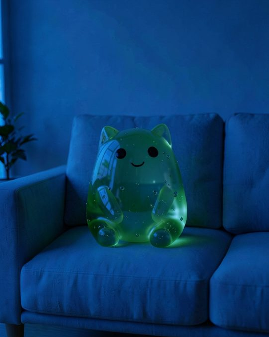
빛 반대쪽 뺨에 작은 삼각형 빛이 생기는 인물 조명입니다.
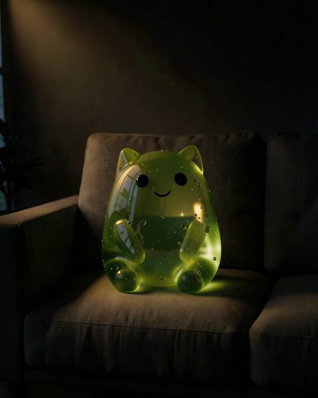
정면 위에서 비춰 코 아래에 나비 모양 그림자가 생기는 조명입니다.
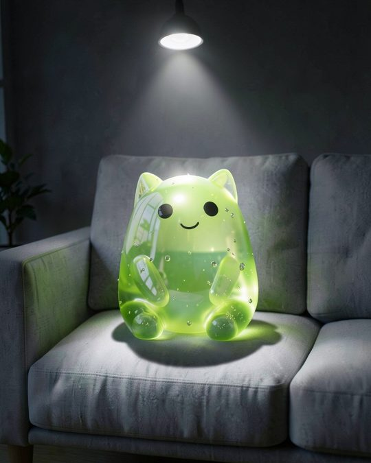
옆에서 비춰 얼굴을 밝은 쪽과 어두운 쪽으로 반씩 나누는 조명입니다.
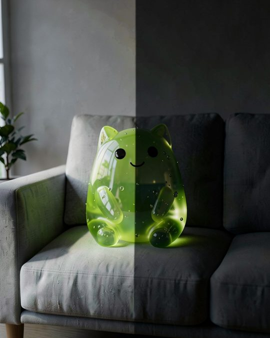
뒤에서 비춰 윤곽선을 밝히는 빛입니다.
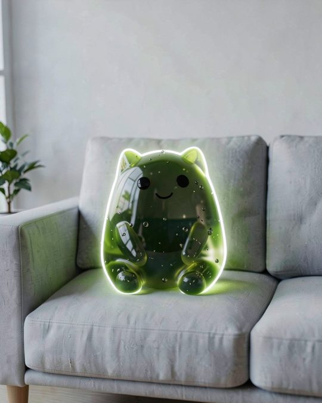
피사체 뒤에서 카메라 쪽으로 오는 빛입니다.
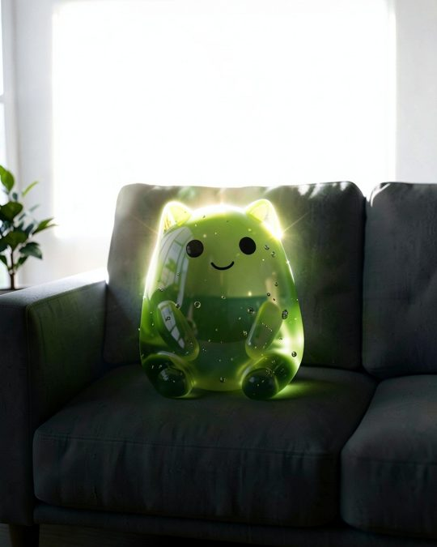
분홍·파랑 같은 네온사인 색의 빛입니다.
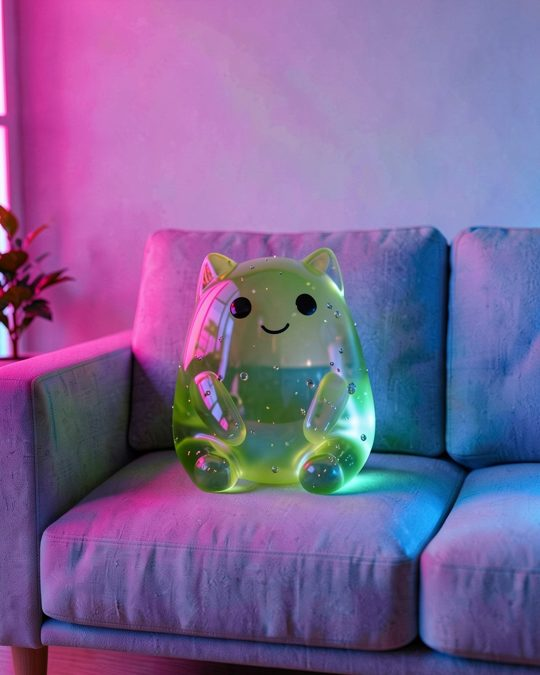
촛불의 낮고 따뜻한 주황빛입니다.
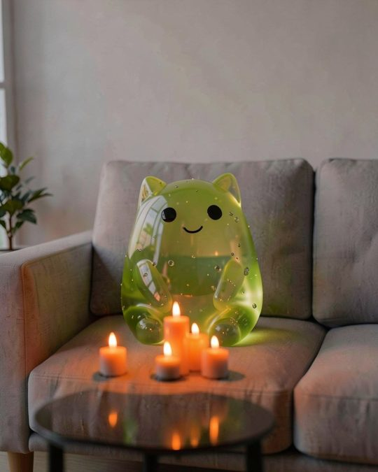
창으로 들어오는 부드러운 낮 빛입니다.
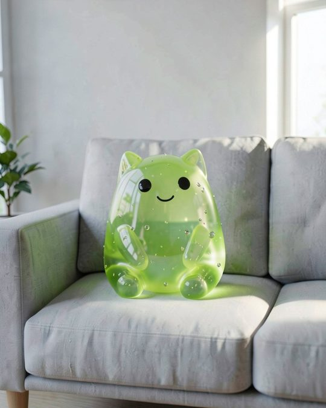
천으로 빛을 넓게 퍼뜨리는 사각형 스튜디오 조명입니다.
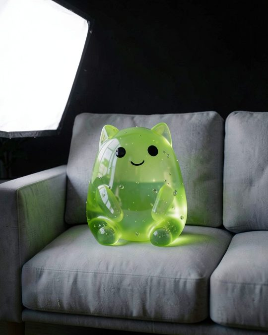
그림자 윤곽이 뚜렷하게 생기는 강한 직사광입니다.
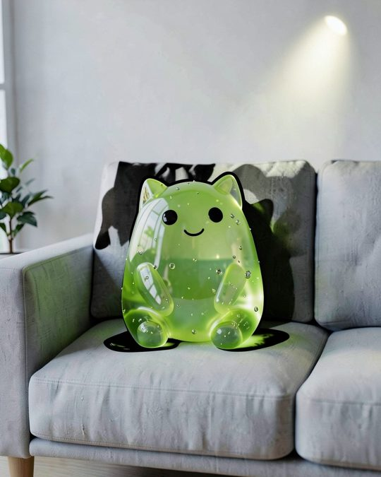
공기 속 먼지나 안개에 빛줄기가 보이는 효과입니다.
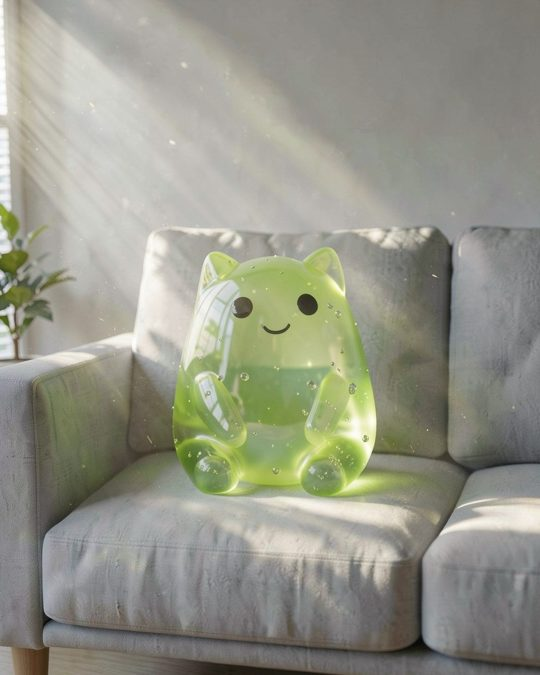
조명 앞에 색 필름을 대어 색을 입힌 빛입니다.
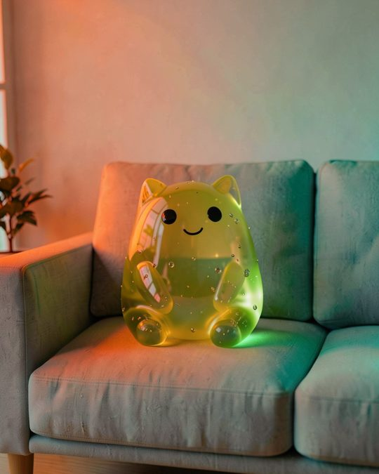
천장 형광등의 차갑고 평평한 빛입니다.
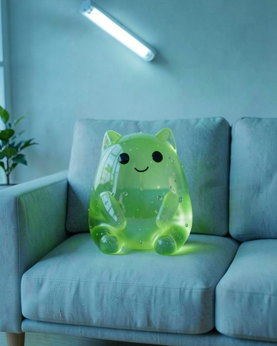
밤의 푸르고 약한 빛입니다.
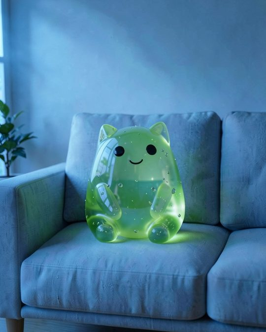
좁은 범위만 동그랗게 비추는 무대 조명입니다.
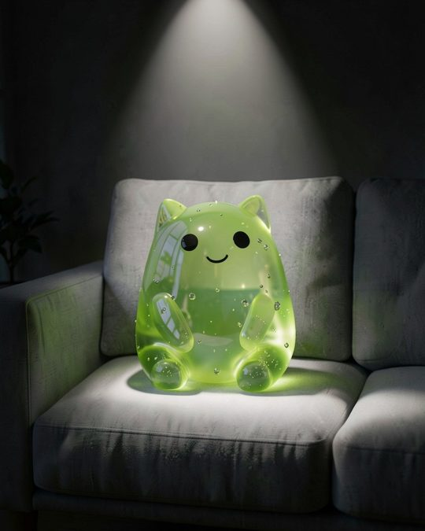
구름에 퍼져 그림자가 거의 없는 흐린 날의 빛입니다.
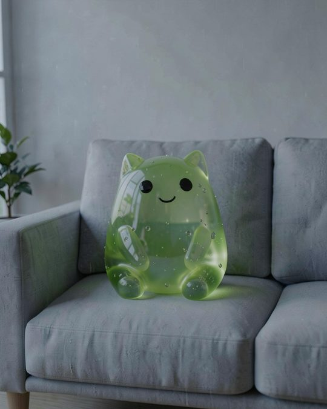
추가 조명 용어 30개
영상에 나오지 않은 용어 30개예요. 일부 용어에는 예시 그림을 붙였어요.
얼굴 위와 아래에서 빛을 비춰 그림자를 줄이는 인물 조명입니다.
코 옆에 작은 고리 모양 그림자가 생기는 인물 조명입니다.
카메라 쪽을 향한 얼굴 면에 빛을 주는 방식입니다.
카메라에서 먼 쪽 얼굴 면에 빛을 주는 방식입니다.
키 라이트·필 라이트·백 라이트 세 개로 비추는 기본 조명입니다.
장면을 비추는 가장 센 주된 빛입니다.
키 라이트가 만든 그림자를 덜 어둡게 채우는 보조 빛입니다.
머리 위 뒤쪽에서 비춰 머리카락 윤곽을 밝히는 빛입니다.
고리 모양 조명으로, 눈동자에 동그란 반사가 생깁니다.
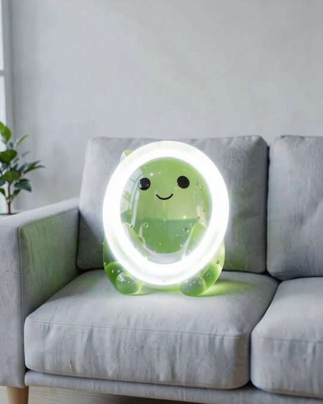
접시 모양 반사판이 달린 인물 화보용 조명입니다.
카메라 정면에서 터지는 플래시로, 뒤에 진한 그림자가 생깁니다.
벽이나 천장에 빛을 반사시켜 부드럽게 비추는 방식입니다.
밝은 배경 앞에서 대상이 검은 윤곽으로만 보이게 하는 조명입니다.
밝은 곳과 어두운 곳의 차이를 크게 만든 조명입니다.
명암 대비를 강하게 쓰는 회화 기법에서 온 말입니다.
옛 흑백 범죄 영화처럼 어둡고 그림자가 짙은 조명입니다.
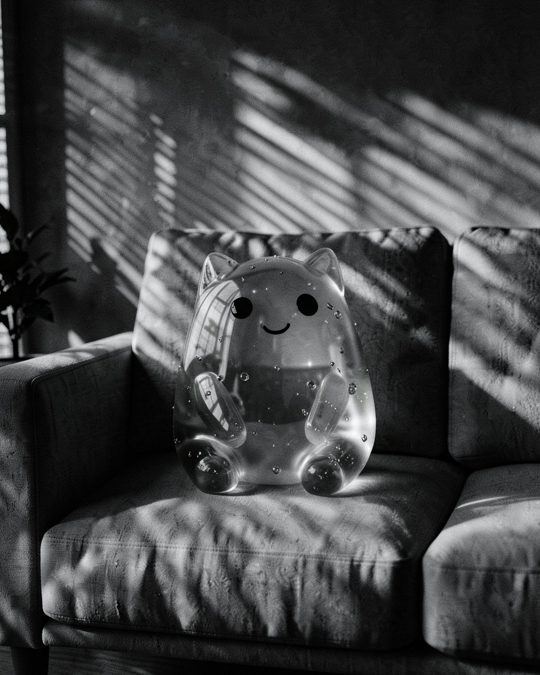
화면 안에 보이는 전등을 빛으로 쓰는 방식입니다.
창문·전등처럼 장면 안에 빛이 나올 곳이 있는 것처럼 비추는 방식입니다.
백열전구처럼 주황빛이 도는 따뜻한 빛입니다.
한낮 햇빛에 가까운 흰빛입니다.
넓은 판 모양의 LED 조명입니다.
아래에서 위로 비추는 빛으로, 무서운 분위기에 자주 씁니다.
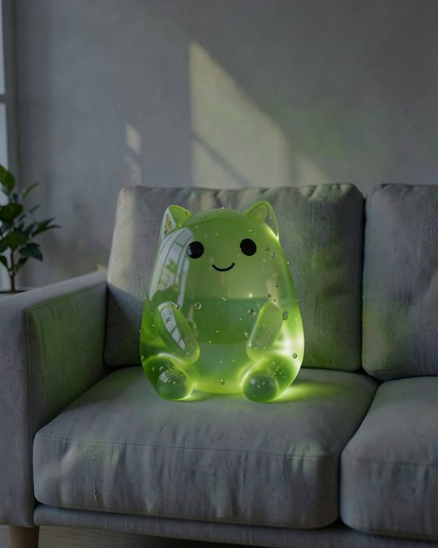
머리 바로 위에서 수직으로 떨어지는 빛입니다.
옆에서 비춰 표면의 질감과 굴곡을 살리는 빛입니다.
빛을 되돌려 그림자 쪽을 밝히는 판입니다.
빛 앞에 대어 빛을 부드럽게 퍼뜨리는 천이나 판입니다.
구멍 뚫린 판을 조명 앞에 대어 무늬 그림자를 만드는 방식입니다.
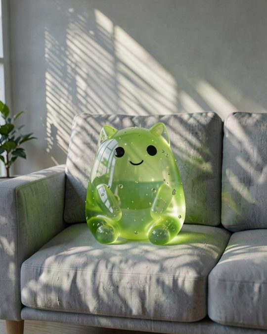
직사광선이 닿지 않는 그늘의 고른 빛입니다.
머리 위에서 내리쬐는 강한 햇빛으로, 그림자가 짧고 진합니다.
모닥불이나 벽난로의 흔들리는 주황빛입니다.
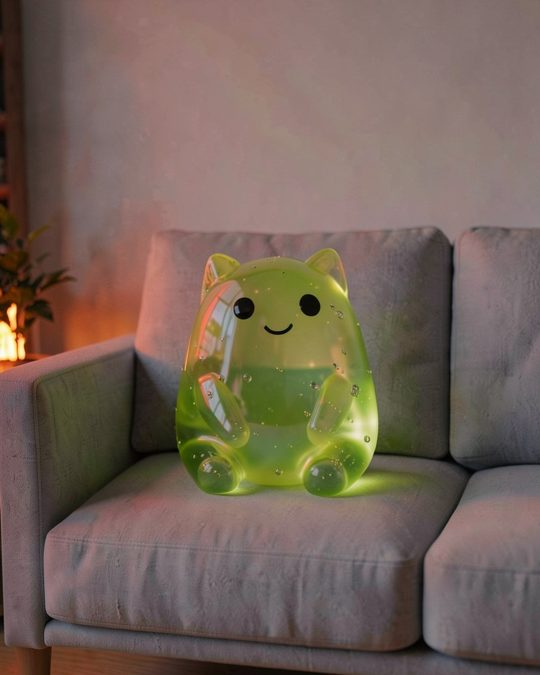
매일 AI 소식은 @tokenwar_ai